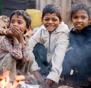

A Safe Place to Explore Questions About Life and God
A Safe Place to Explore Questions About Life and God
Some people want to suggest that humans are on the same playing field as the rest of the animal kingdom. Evolutionary processes affect humans, the same as fish. At the core, decisions are made out of the same self-interest as any species.
Why then does it bother us that thousands in Africa are dying of HIV/AIDS? Or that people are starving in countries under corrupt, greedy governments? Why does it concern us that girls are being kidnapped into sex slavery, or that thousands are being slaughtered by ISIS?
What happened to our understanding of "survival of the fittest?" The stronger winning over the weaker should be the norm. That should be acceptable to us.
But it is not acceptable. "Survival of the fittest" actually runs against our conscience. We don't believe that a person should be victimized, just because a stronger person is able to do it to them.
There is in human nature, a heart of compassion that runs upstream, against evolutionary processes. What might be to our own benefit and good for our own survival, might not be what we choose. We might desire the exact opposite.
We might, at risk to our own safety, pull an accident victim out of a burning car. We might move to another country to rescue girls from sex slavery. We might join humanitarian relief organizations in countries known for guerilla kidnappings and brutal, random murders.
Why do we do it? Why do we find it fulfilling to help others, when it might cost us our lives? What draws us toward these unselfish acts of kindness?
Could it be for the reason that Archbishop Desmond Tutu of South Africa proposes? He contends that we have been created for "goodness."
"It is quite wonderful, yes amazing, that in a hard-headed cynical world such as our own, those we admire most, indeed revere, are not as we might have expected. [They are not] the macho, the aggressive, even the successful. No, amazingly, it is such as Mother Teresa, a Dalai Lama, a Mahatma Gandhi, and a Nelson Mandela.
"Why do we revere such as these? Why?
"It is because they are good, and our hearts rejoice, exult in their presence. They make us feel good about being human.
"And because, we (all of us) have been made for goodness. We have been made for God, for laughter, we have been made for gentleness, we have been made for caring, for sharing, for compassion."1
Is this true? God, the originator of our lives, says "yes." Our lives have greater purpose than survival.
Here is a glimpse of God’s purpose for our lives.
"For we are his workmanship, created in Christ Jesus for good works, which God prepared beforehand, that we should walk in them."2
"He has told you, O man, what is good; and what does the Lord require of you, but to do justice, and to love kindness, and to walk humbly with your God."3
There are materialists who will try to convince us that we have no conscience, no internal draw toward goodness. To them, we are merely led by chemical impulses, preprogrammed by evolutionary development. They say we have a brain, but no mind. A body, but no soul. Some of them would argue that as material, physical objects, we cannot be asked to do more than what is in our self-interest. We are nothing greater than evolved animals.
These same materialists however, will contradict themselves. They say that we are without free will, without conscience, but then ask us to make moral choices. For example, they might ask us to protect our environment and to refrain from using plastic bags, wasting water, burning fuels that pollute the air. How can they ask for such self-sacrifice?
If we are programmed toward victory over one another, then why sacrifice?
Author Dinesh D'Souza poses this question about our inward motivations. "...evolution does a good job in accounting for why we are selfish animals, but it faces immense challenges in accounting for why we simultaneously hold that we ought not to be selfish."4
To care for others is how God made us.
"Who, of you, has never experienced when you have done something gratuitously good, when you have been nice to someone when you needn't have been. You have a wonderful glow inside of you. You really feel good.
[And] when you have done something lousy, your body tells you. You feel it in your stomach. Anger, resentment affects you ... affects you. Your blood pressure goes up, because our nature is in fact to be good. That is, what we are created for."5
Do you want to see righteous actions for the poor, instead of abuse? To see mercy, and peace? That's exactly what God wants us to pursue.
All the major religions on earth – Hinduism, Buddhism, Islam, Christianity – all hold Jesus Christ in highest esteem. His life was unique. His values uncompromising.
Jesus promised, "Blessed are those who hunger and thirst for righteousness, for they shall be satisfied. Blessed are the merciful, for they shall receive mercy. Blessed are the pure in heart, for they shall see God. Blessed are the peacemakers, for they shall be called sons of God."6
However, let's be honest. As humans, we also are capable of selfishness, greed, murder. We have no problem ignoring the poor, the suffering, the homeless. And that's our dilemma.
"We want to believe in ultimate human goodness, but all too often our hopes are dashed by selfish and violent acts of our own human family against each other. We cling to the promise of new scientific breakthroughs to help our hurting world, but we fear that some of these discoveries may be used in ways that cause more harm than good."7
There in lies the problem. We have two conflicting natures within us. One part of us is very self-centered, focusing on what benefits us, even to the detriment of others. The other part of us sincerely wants to sacrifice for others. We have an inward conflict that the animal kingdom does not.
Yet there is a solution. Our better selves actually can win out. But not on our own. There is an advantage in knowing God. When we experience his love, it takes us beyond our own human limitations. God can pull us out of our self-centeredness and cause us to care more deeply about others. Why do we find so many charities, serving in the most difficult circumstances, are faith-based?
The Bible boldly states, "We love because he first loved us."8
Experiencing, being convinced of God’s unconditional, unchanging love for us, affects our view of others.
In the Gospel of John, we read of Jesus, "So the Word became human and made his home among us. He was full of unfailing love and faithfulness. And we have seen his glory, the glory of the Father's one and only Son."9
 "Jesus went through all the towns and villages, teaching in their synagogues, preaching the good news of the kingdom and healing every disease and sickness. When he saw the crowds, he had compassion on them, because they were harassed and helpless, like sheep without a shepherd."10
"Jesus went through all the towns and villages, teaching in their synagogues, preaching the good news of the kingdom and healing every disease and sickness. When he saw the crowds, he had compassion on them, because they were harassed and helpless, like sheep without a shepherd."10
He created us to know his love for us, and demonstrate that same love to others.
Jesus said, "As the Father has loved me, so have I loved you. Now remain in my love. ...My command is this: Love each other as I have loved you."11
Have you ever heard how you could know God’s love for you? Take a look at Jesus’ life. Here is a quick read, excerpts straight from Gospel of John, in the Bible: Who Was Jesus?
Also, here are some Ways to Help the Poor.
| ► | I have a question or comment... |
| ► | How to know God... |
Footnotes: (1) http://spiritize.blogspot.com/2005/12/desmond-tutu.html (2) Ephesians 2:10 (3) Micah 6:8 (4) Dinesh D'Souza, Life After Death, Regnery Publishing, Inc., 2009. (5) Archbishop Desmond Tutu, http://www.achievement.org/autodoc/page/tut0bio-1 (6) Matthew 5:6-9 (7) Francis Collins, director of the Human Genome Project, speaking at a White House prayer breakfast, February, 1, 2007 (8) 1John 4:19 (9) John 1:14 (NLT) (10) Matthew 9:35,36 (11) John 15:9, 12